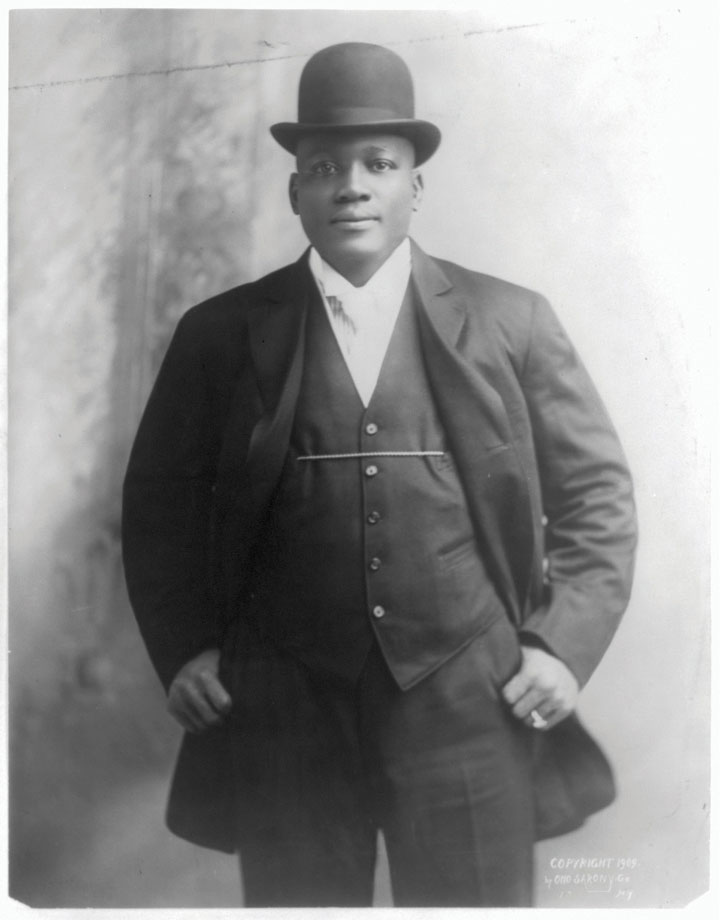
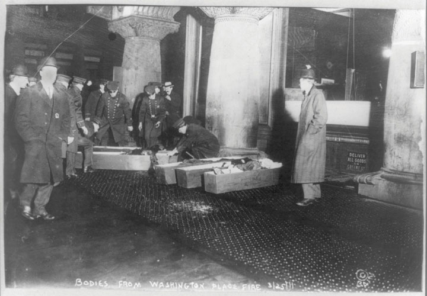

Traveling shows continued to reach even the most isolated rural areas of the United States. By 1900, agricultural commodity prices had become a bit more stable, permitting many rural dwellers to take advantage of special “excursion rates” that offered discounted rail travel to nearby cities. Saloons also sought to attract more customers by offering free food or even a free vaudeville show to thirsty city-goers. By the turn of the century, saloons were the most numerous business in many urban neighborhoods, outnumbering the diverse local purveyors of dry goods, produce, and meat. Saloons even proliferated in “dry” cities and counties, regardless of the efforts of the WCTU and other Prohibitionists.
Baseball continued to grow in popularity, despite a series of scandals involving gambling that ranged from local teams to the major leagues. Allegations that gangsters and bookies had corrupted the integrity of the game would culminate in 1919 when the Chicago White Sox intentionally lost the World Series to the Cincinnati Reds. The scandal led to the growing popularity of local teams, including those composed of African Americans. One of the most interesting traveling teams was an Iowa-based club known as the All Nations. This team traveled on its own rail car and featured players of various racial and ethnic backgrounds. Other sports such as horse racing had been dominated by African Americans but drew the color line by creating rules requiring membership in all-white jockey associations. Although a handful of black sports stars such as cyclist Marshall Taylor and jockey Isaac Murphy would acquire a measure of fame and fortune, most were excluded from both team and individual sports.
Boxer Jack JohnsonThe first African American to win the heavyweight title in boxing, Jack Johnson angered whites by not only beating the popular Jim Jeffries but emasculating him in the ring in their 1910 bout in Reno, Nevada. Johnson also openly dated white women in violation of a social taboo of the early twentieth century. was the most notable exception to the general trend of black exclusion from sports. In 1908, Johnson defeated the reigning heavyweight champion Tommy Burns. The fight was held in Australia because no US venue agreed to host the interracial bout. Most white Americans discounted the fight’s significance, pointing to the fact that Burns had only been given the title after the undefeated champion Jim Jeffries retired. The backlash against Johnson was so strong that Jeffries agreed to come out of retirement for the sole purpose of putting Johnson “back in his place.” Other black boxers had won the championships of other weight divisions, but Johnson’s victory was much more disturbing to many whites because of his bravado and tendency to date white women in violation of the era’s social mores. Whites were so angry when Johnson defeated Jeffries in 1910 during a highly anticipated fight in Reno, Nevada, that dozens of episodes of racial violence exploded throughout the country.
Figure 4.33
Jack Johnson defeated Jim Jeffries in 1910 in Reno, Nevada. This victory made Johnson the undisputed heavyweight champion. Whites at this time expected black athletes to act with great humility, but Johnson displayed bravado and flouted his wealth.
In Americus, Georgia, a black man was beaten, shot, lynched, and then set on fire by a white mob for failing to hide his pleasure at the way Johnson humiliated Jeffries in the ring. Whites who could not stop the fight or its outcome wanted to send the message that Johnson’s victory had changed nothing. The mania with which the mob tore the man’s flesh demonstrated a fear that African Americans were advancing—not only in sports but throughout society—despite attempts to maintain white supremacy.
A young African American named James Nabrit walked past the spot where the lynching had taken place on his way to the one-room school reserved for the education of his race in that Georgia town. He withstood a gauntlet of abuse each day on this walk as whites taunted him, attempting to thwart his ambition in ways that paralleled the 1910 mob. They failed. James Nabrit made that walk every day, eventually graduating first in his class at Northwestern Law School. He would later serve as one of the lead attorneys on behalf of the NAACP in Brown v. Board of Education, which outlawed school segregation throughout the nation.
The growing popularity of hypermasculine sports such as boxing was partially a reaction to concerns about the influence of modernity on the martial ethic. Teddy Roosevelt became the leading spokesman for those who feared that “overcivilization” had led middle-class men to lose touch with their own masculinity. Prior to the growth of the corporation, middle-class men were prosperous gentlemen farmers and artisans. These men might not have worked with their hands every day, but they were still connected to the hard and substantial productive labor of the farm and shop. Equally important, they were the masters of their domain as independent producers.
After the turn of the century, the majority of middle-class men were midlevel employees who had to submit to the authority of other men. They neither owned nor controlled productive property nor commanded or conducted physical labor. The number of such jobs in corporate offices multiplied tenfold in the decades following the Civil War. The fact that much of their work was being assigned to a growing army of women did little to counter the fears that clerical labor was emasculating a generation of American men.
A secondary concern was that the growing number of female school teachers was leading young men to become “soft” while eliminating masculine role models. American men had always been raised by women, but this new generation of women was seemingly different from the submissive matron of the past, or at least the popular imagination of the past. Women were increasingly demonstrating their ability to compete in the marketplace and agitating for the vote in every community. Women were also clamoring for the eradication of the saloons where men had gathered in the past. Even the boxing ring and gambling houses had been closed following the campaigns of female reformers. These were progressive changes from the perspective of those horrified by the crippling violence and financial ruin that occurred in such “manly” places. For those already convinced that masculinity was on the decline, the growing power of women to influence politics and constrict the separate sphere of manly recreation was further proof that men were under siege in a battle of the sexes.
The solution, it appeared to some, might be found in other kinds of battles. Roosevelt declared that the Spanish-American War had led to national revitalization through cultivating the martial ethic and rekindling the manliness of generations past. “If we shrink from the hard contests where men must win at hazard of their lives,” Roosevelt counseled, “the bolder and stronger peoples will pass us by, and will win for themselves the domination of the world.” Roosevelt’s exhortation contained multiple references to masculinity, his final exhortation a challenge to the new generation of men who must resolve to fulfill their duties “manfully.” Behind the nationalistic bluster, Roosevelt’s defense of “splendid little wars” as a method of preventing American men from growing soft and effeminate demonstrated that the conception of masculinity could be cited in defense of aggression as well as protection.
For most of the nineteenth century, manliness was based on the notion of paternal duty and obligation. Historians of gender have shown that the concept of masculinity was related to one’s success as a patriarch and provider. The worst gender-based insult at this time was to refer to an adult male as a “boy.” Whites regularly used this word to emasculate minority men, denying their independence and therefore rejecting their manhood. By the turn of the century, the conception of manliness and the language used to express it had shifted. Perhaps in relation to concerns about the growing power and influence of women in a world where physical labor was becoming less relevant, men began to define masculinity in opposition to female traits and characteristics. As a result, the worst insults for men were those suggesting effeminate traits. In fact, the entire conception of “emasculation” shifted from projecting immaturity to the use of gender-based and often misogynistic insults.
A “cult of masculinity” emerged in twentieth-century America where prize fighters like Jack Dempsey were idolized. Enlisted soldiers and sailors had previously been held in low regard because these ranks were occupied by the lowest social castes. In the past, such soldiers and sailors were often considered “boys” due to their poverty and bachelorhood. The cult of masculinity reversed that view and military men were increasingly admired for their martial prowess. Bodybuilding had also been held as suspect—either as a vain pursuit or one related to the underground world of homosexuality. By the turn of the century, bodybuilding emerged as a manly pursuit that some middle-class men believed might alleviate some of the consequences of sedentary work routines. As a result of this changing definition of masculinity, the concept of heterosexuality emerged in opposition to homosexuality.
Prior to the turn of the century, heterosexuality did not exist as a category and was merely an assumed trait. People who would later be classed as homosexual were simply marginalized in ways that precluded any deep level of analysis by the dominant society. Psychiatrists and physicians who wrote about the subject tended to assume that gay men were simply men who possessed “feminine” brains. Self-identified homosexual men thought of themselves as “queer,” a word that connoted uniqueness rather than a negative stigma. The era’s hypermasculinity and the absence of concepts of “straight” and “homosexual” meant that straight men could commit homosexual acts without being considered homosexual. As long as they did not demonstrate effeminate mannerisms associated with “fairies”—a derogatory term applied only to effete homosexuals—a man might successfully project his own homosexual urges upon a male sex partner.
A wealth of primary sources demonstrates the widespread acceptance of this seemingly incongruous way of thinking. For example, newspaper articles frequently described the debauchery of soldiers and sailors on leave who visited both male and female prostitutes. In most cases, the authors only considered the makeup-wearing male prostitutes as “deviants” and “fairies” because of their effeminate dress and mannerisms. The soldier and sailor retained their masculinity regardless of their choice of sexual partner as long as they retained the dominant (masculine) sexual role in that liaison and eschewed effeminate behaviors. Sources from prisons and mining camps likewise demonstrate the degree to which this cult of masculinity permitted men to engage in sex with other men without being regarded as homosexual themselves. The social construction of sexual deviance as related to effeminacy created a closet around many male homosexual acts while vilifying homosexuals who displayed effeminate traits.
Figure 4.34

This 1924 photo shows Mary Harris “Mother” Jones with President Coolidge. Jones faced death threats and was arrested on multiple occasions for her efforts promoting labor unions among miners in Pennsylvania, West Virginia, and Colorado.
Labor activists and Progressives joined together to support legislation that would provide minimum wages, maximum hours, and protect workers from industrial hazards. With the exception of state laws that sought to protect society’s interest in making sure that mothers were present in the home during the evening, most of these laws were rejected. Even these laws directed toward the “protection” of women were only as strong as the will to enforce them.
In addition, the Supreme Court voided a variety of laws that had been passed as a result of a partnership between reform politicians and laborers. For example, New York had passed a law limiting the work day to ten hours within bakeries. In 1910, that law was struck down in a landmark Supreme Court case that would be applied to dozens of other laws regulating the workday. In Lochner v. New York, the Court agreed with the owner of a bakery in Utica who claimed that the state law restricted the right of workers to make their own contracts on their own terms. By proclaiming that no employee could work more than ten hours per day, the Court argued, the law violated the “liberty of contract” that gave laborers and management to right to form agreements without undue interference of the state. The decision was controversial but would stand until 1937.
The Lochner decision undermined many Progressive efforts to use the government to regulate private sector conditions, especially those factors including hours and pay. As a result, workers turned once again to labor strikes—a measure that the Progressives had hoped to avoid by passing these kind of protective laws. Mary Harris Jones may have been the most effective labor advocate of this era, earning the trust of the predominantly male workers in coal mines from Pennsylvania to Colorado. She was affectionately known as “Mother” Jones to these miners, while industrialists knew her only as “the most dangerous woman in the world.”
Figure 4.35
New York City police placing the victims of the Triangle Shirtwaist Fire in coffins. Dramatic images such as these and photos of women leaping to their deaths mobilized public support in favor of stricter building codes and tougher regulations regarding workplace safety.
During her long life, Mother Jones was a fearless organizer who led coal strikes throughout the nation by traveling arduous mountain paths to spread her prounion ideas. Jones had first achieved a measure of notoriety in 1903 when she led a protest march of children carrying signs asking for the right to attend school instead of working in factories. As she approached her eightieth birthday, she faced death threats and was arrested numerous times for her support of coal miners during strikes in West Virginia and Colorado between 1912 and 1914, which are discussed in the next chapter.
Conventions respecting age and gender may have shielded Mother Jones against those who would have otherwise ended her life. Notions of protecting women usually proved hollow, however, when applied to the hundreds of thousands of immigrant and minority women who worked as domestics and laborers. Rape and physical abuse were among the dangers African Americans and other women faced as they worked in middle-class homes and raised white children. Others faced grueling working conditions within the garment industry. These jobs featured ten- and twelve-hour shifts, as well as low wages for male workers and even lower wages for the predominantly female workforce. Children hired to replace bobbins within moving machines and women who worked the looms faced fatigue and the constant risk of injury and even death.
In New York City in 1911, a fire at the Triangle Shirtwaist Company led to the deaths of 146 workers. The majority of those killed were young women who had no escape because the company had locked one of the doors to prevent them from taking breaks. Firefighters had no way to reach the women as their ladders could not reach the top floor of the building whose fire escape had collapsed. As a result, rescue personnel looked on helplessly as women leaped to their deaths. The Triangle Shirtwaist Factory FireAn industrial tragedy in New York City that led to the death of 146 workers, mostly young women, when a fire trapped employees of the Triangle Shirtwaist Company in March 1911. The fire led to calls for tougher laws regulating building codes and workplace safety. finally awakened the nation to the dangerous conditions that led to thousands of workplace fatalities each year. It also led to belated revisions in building codes and a renewed effort to improve the skills and equipment of firefighters.
A small number of labor leaders at the turn of the century envisioned a much more radical union movement that would include workers of all races and ethnicities, trades, and skill levels. Like the Knights of Labor, labor organizers such as Eugene Debs turned to Socialism and its vision of worker-owned factories and mines. Socialists believed that the government, as the instrument of the people, should control “the means of production.” Socialists used this term to describe productive property such as factories and farms.
Socialists viewed the modern-day relationship between business and government as part of a capitalist plot to maintain the power of wealth. For most Americans, however, Socialism was the antithesis of freedom because it sought to abolish private property and restrict free enterprise. Despite all of the hardships workers faced and the crushing poverty of many Americans, most did not believe that they would fare better under a system that would eliminate the profit motive and distribute wealth to all regardless of their talents and accomplishments. From the perspective of Socialists, however, their doctrine provided liberation from a profit motive that led to child labor and hundreds of daily workplace fatalities.
Most political leaders presented Socialism as antagonistic to the freedoms Americans enjoyed and a violation of principles such as the protection of private property on which the government was founded. Some of the nation’s founders recognized the possibility that democracy could lead to the redistribution of wealth that Socialism envisioned. In response, many of the founders favored restrictions barring suffrage from those who did not own significant wealth. From the perspective of Socialists, the efforts of these wealthy men to restrict the vote to landowners demonstrated that the class interests of the founders outweighed their vaunted support for democracy. For these individuals, collective ownership of those things that produced wealth was the highest expression of democracy.
In 1905, the Industrial Workers of the World (IWW)A radical labor union that enrolled all workers regardless of race, ethnicity, gender, or occupation. The IWW were nicknamed “Wobblies” and sought class solidarity among all laborers in hopes of promoting a revolutionary challenge to the Capitalist system. was formed as a union for those who sought to merge the political goals of American Socialists with the vision of radical unionism created by the Knights of Labor. Like the Knights, the IWW sought to enroll both skilled and unskilled laborers regardless of their race, ethnicity, or gender. A leader of a miner’s union, “Big” Bill Haywood was elected to lead the members of the IWW who were soon nicknamed “Wobblies” for reasons that are still unclear.
The total number of these Wobblies rarely exceeded 10,000 at any given moment, but the IWW maintained an influence far larger than its numbers due to the efforts of activists such as Mother Jones. The heart of the IWW’s influence was its radical message of worker solidarity against Capitalism. “If the workers of the world want to win, all they have to do is recognize their own solidarity,” counseled IWW leader Joseph Ettor. “They have nothing to do but fold their arms and the world will stop...with passive resistance, with the workers absolutely refusing to move, laying absolutely silent, they are more powerful than all the weapons and instruments that the other side have for protection and attack.”
Ettor defied the conventional logic that suggested women and immigrants would not join the labor movement when he organized multiple strikes in textile mills throughout the country. The most famous of these was the Lawrence Textile Strike of 1912A strike of an estimated 20,000 mill workers in Lawrence, Massachusetts, that was supported by the IWW and led to a partial restoration of wages. The mills had reduced the weekly pay of workers in response to a Massachusetts law that reduced the maximum workweek to fifty-four hours.. In January of that year, Progressive reformers in Massachusetts passed a state law making it illegal for employers to compel women and children to work more than fifty-four hours per week. Employers responded with immediate reductions in pay that led 20,000 workers to the picket lines. Lawrence was a mill town, and city authorities mobilized on behalf of the owners. Officials in Lawrence even ordered the fire department to spray the women and children on the picket line with fire hoses in the midst of a Massachusetts winter. Authorities defended their actions by pointing out that IWW members had trespassed onto mill property, breaking windows and shutting off power to prevent the mills from operating after hiring strikebreakers.
Figure 4.36

One of many handbills circulated during the Lawrence Textile Strike of 1912 to encourage solidarity. A “scab” is someone who crosses a picket line and resumes work during a strike.
Despite mass arrests and police harassment, the mill workers, with the support of the IWW, succeeded in having their pay restored. This success was due to the efforts of Socialists and IWW supporters throughout the East Coast who established soup kitchens and even agreed to care for the workers’ children so that strikers could stay on the picket lines. In making this concession, mill owners secretly planned to reduce wages once IWW organizers left the area. This would become one of the most effective tactics in the arsenal of management and would reverse the short-lived success of numerous strikes during this era.
Ideas about the constitutional protections of political speech were still developing at this time. Socialists such as Emma Goldman advocated violence to destroy the Capitalist system. Goldman also led an organization called the Free Speech League, but her willingness to endorse violence did little to convince Americans of this generation that freedom of speech should be absolute. In fact, numerous local laws were passed barring the right of any political speech in certain areas known for labor radicalism, such as San Diego’s “soapbox row.”
Although American socialists rarely initiated violence, their ideological support of revolution against capitalism and the violent acts of socialists and other radicals in Europe created a different impression among many Americans. However, mainstream Socialist leaders in the US such as Eugene Debs were seldom as radical as their European counterparts. Most US Socialists hoped to work through the existing political system and did not envision the overthrow of government via an armed revolution of the working class. American Socialist thinkers were also more likely to share working-class backgrounds than European theorists such as Karl MarxA revolutionary German philosopher that viewed the history of every society as a progression of class struggle. Marx believed that once a society became industrialized, workers would eventually rise up against the ruling Capitalist class and create an economic and political system that distributed property among workers.. Known as the leading figure in Socialist thought at this time, Marx eschewed physical labor, even when his own family was suffering. He also held ironically condescending views toward the working class. The same was true of some American Socialists, although Debs and those affiliated with the IWW were unapologetically blue collar.
Figure 4.37

Soldiers with bayonets drawn surround striking workers and guard the entrance to the mills in Lawrence, Massachusetts, during the strike of 1912.
Because of concerns about the growth of Socialism through radical labor unions, IWW members were frequently arrested. Some IWW leaders were committed Socialists who feared that a successful strike that resulted in higher wages would reduce the militancy of their members by discouraging the kind of activism that might lead toward their ultimate goal of collective ownership. The degree to which rank-and-file members of the IWW-affiliated unions shared this goal is difficult to determine. Like the Knights of Labor, many members were likely more concerned with their immediate welfare and wages.
However, unlike the Knights of Labor, which expanded rapidly, the IWW remained a relatively small and tight-knit confederation of unions. As a result, a large percentage of IWW members were involved in the protests and mass arrests that led to the notoriety and infamy of the organization. More than any other labor union, Wobblies shared an ideological commitment to a politically unpopular goal. The IWW was considered radical, even among those who disapproved of the violent methods that were often used to suppress their opinions. In response, the IWW utilized many of the direct action techniques that would later be identified with the civil rights movement of the 1960s. IWW members often endured great hardships by participating in sit-ins, boycotts, and protest marches. They hoped that filling the jails would help to further their goals. At the same time, many IWW members rejected the doctrine of nonviolent resistance that would define the civil rights movement.
Your Honor, years ago I recognized my kinship with all living beings, and I made up my mind that I was not one bit better than the meanest on earth. I said then, and I say now, that while there is a lower class, I am in it, and while there is a criminal element I am of it, and while there is a soul in prison, I am not free.
—Eugene Debs following his 1918 conviction for violating the Sedition Act